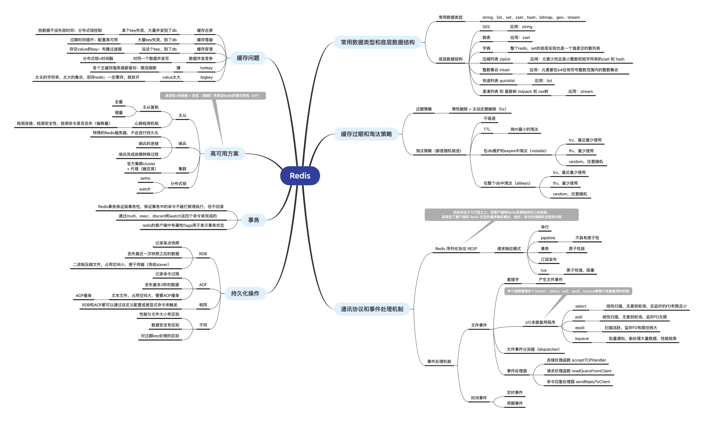
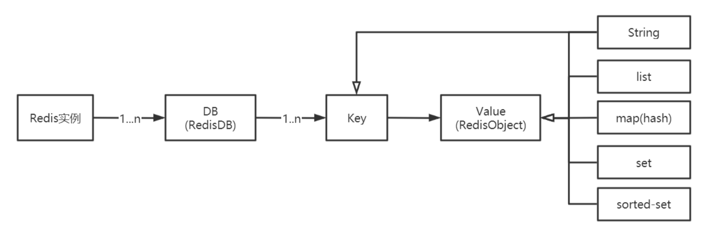

数据类型和底层结构

RedisDB
1 | typedef struct redisDb { |
RedisObject
1 | typedef struct redisObject { |
常见数据类型
string、list（评论列表等）、set（抽奖等）、zset（各种排行榜等）、hash
bigmap（用户在线状态的过）、geo（查找附近的人等）、stream
底层数据结构
SDS
基本结构：在 C 字符串的基础上加入了 free 和 len 字段。
1
2
3
4
5
6//例如，字符串“hello”，len=5，free=0，buf[] : {'h','e','l','l','o','\0'}，
struct sdshdr{
int len; //记录buf数组中已使用字节的数量。
int free; //记录 buf 数组中未使用字节的数量
char buf[];//字符数组，用于保存字符串,buf数组的长度=free+len+1
}使用场景：string，所有的key存储等
- 跳跃表
- 基本思想：将有序链表中的部分节点分层，每一层都是一个有序链表，具有二分查找的功能。
- 优势：可以快速查找到需要的节点 O(logn)，实现起来比红黑树简单。
字典
基本思想：键值对，数组+链表实现。具体实现包括：字典(dict)、Hash表(dictht)、Hash表节点(dictEntry)。
1
2
3
4
5
6
7
8
9
10
11
12
13
14
15
16
17typedef struct dictht {
dictEntry **table;
unsigned long size;
unsigned long sizemask;
unsigned long used;
} dictht;
typedef struct dictEntry {
void *key;
union {
void *val;
uint64_t u64;
int64_t s64;
double d;
} v;
struct dictEntry *next;
} dictEntry;字典扩容：字典达到存储上限（阈值 0.75），需要rehash（扩容）。
- rehash：将老的hash表h[0]的数据重新计算索引值后全部迁移到新的hash表h[1]中的过程。
- 压缩列表（ziplist）
- 基本思想：由一系列特殊编码的连续内存块组成的顺序型数据结构
- 应用场景：
- 直接使用：zset和hash元素个数少且是小整数或短字符串；
- 间接使用：list用快速链表(quicklist)数据结构存储，而快速链表是双向列表与压缩列表的组合。
- 整数集合(intset)
- 基本思想：有序的（整数升序）、存储整数的连续存储结构。
- 应用场景：当Redis集合类型的元素都是整数并且都处在64位有符号整数范围内（2^64），使用该结构体存储。
- 快速列表（quicklist）
- 基本思想：一个双向链表，链表中的每个节点时一个ziplist结构。quicklist中的每个节点ziplist都能够存储多个数据元素。
- 应用场景：list的底层实现
- listpack（紧凑列表）和Rax树（基数树）
- 应用场景：stream的底层实现
缓存过期和淘汰策略
Redis 作为缓存使用，Key不断增加，到达物理内存之后，性能急剧下架，甚至崩溃，所以需要设置maxmemory：趋近maxmemory时，通过缓存淘汰策略，从内存中删除对象
过期策略
Redis目前采用惰性删除+主动删除（定期）的方式。
- 惰性删除：调用expireIfNeeded函数，该函数的意义是：读取数据之前先检查一下它有没有失效，如果失效了就删除它。
- 主动删除：每隔一段时间（可以配置 hz）对设置了缓存时间的key进行检测，如果可以已经失效，则从内存中删除，如果未失效，则不作任何处理。
淘汰策略（八种）
- 默认
- No-enviction：禁止驱逐数据
LRU：RedisObject中有维护lru相关字段，在数据集中随机挑选几个键值对，取出其中 lru 最大的键值对淘汰。
volatile-lru：从已设置过期时间的数据集（server.db[i].expires）中挑选最近最少使用的数据淘汰
redisDB中维护expires：维护的是一组设置了失效时间的键 ( 即key与失效时间的映射 )。
- allkeys-lru：从数据集（server.db[i].dict）中挑选最近最少使用的数据淘汰，一般使用该种策略
- LFU：RedisObject中维护了相关字段（lru中的某几位），如果一个数据在最近一段时间内使用次数很少，那么在将来一段时间内被使用的可能性也很小。
- volatile-lfu：从已设置过期时间的数据集（server.db[i].expires）中挑选最少使用的数据淘汰
- allkeys-lfu：从数据集（server.db[i].dict）中挑选最少使用的数据淘汰
- Random：随机进行淘汰
- volatile-random：从已设置过期时间的数据集（server.db[i].expires）中任意选择数据淘汰
- allkeys-random：从数据集（server.db[i].dict）中任意选择数据淘汰
- TTl：随机挑选几个键值对，取出其中 ttl 最小的键值对淘汰
- volatile-random：从过期时间的表（server.db[i].expires）中随机挑选几个键值对，取出其中 ttl 最小的键值对淘汰。
通讯协议（RESP）
Redis是单进程单线程的。客户端和Redis通过 Redis序列化协议（RESP） 进行交互。该协议规定了请求响应模式，请求格式，响应格式，命令处理以及解析过程等内容。
请求响应模式
Redis协议位于TCP层之上，即客户端和Redis实例保持双工的连接。
- 串行的请求响应模式（ping-pong）—— telnet和redis-cli 发出的命令都属于该种模式
- 双工的请求响应模式（pipeline）—— 通过Jedis可以很方便的使用pipeline
- 原子化的批量请求响应模式（事务）
- 发布订阅模式(pub/sub)：哨兵模式，Redisson框架使用
- 脚本化的批量执行（lua）
管道（pipeline）,事务和脚本(lua)三者的区别
三者都可以批量执行命令
管道无原子性，命令都是独立的，属于无状态的操作
事务和脚本是有原子性的，脚本的原子性要强于事务，脚本执行期间，另外的客户端和其它任何脚本或者命令都无法执行，所以脚本的的执行时间应该尽量短
请求数据格式（redis-cli）
- 间隔符号，在Linux下是\r\n，在Windows下是\n
- 简单字符串 Simple Strings, 以 “+”加号 开头
- 错误 Errors, 以”-“减号 开头
- 整数型 Integer， 以 “:” 冒号开头
- 大字符串类型 Bulk Strings, 以 “$”美元符号开头，长度限制512M
- 数组类型 Arrays，以 “*”星号开头
1 | redis> SET hello world |
实际发送的如下
1 | *3\r\n$3\r\nSET\r\n$5\r\nhello\r\n$5\r\nworld\r\n |
实际收到的响应数据：
1 | +OK\r\n |
命令处理流程
- redis启用，创建eventLoop（事件机制），注册时间事件处理器，注册文件事件（socket）处理器
- 监听 socket 建立连接
- 建立Client，redis-server为每个连接（socket）创建一个 Client 对象，创建文件事件监听socket，指定事件处理函数
- 读取socket数据到输入缓冲区，从client中读取客户端的查询缓冲区内容。
- 解析获取命令，将输入缓冲区中的数据解析成对应的命令，判断是单条命令还是多条命令并调用相应的解析器解析
- 执行命令，解析成功后调用processCommand 方法执行命令，大概分为三个部分，调用 lookupCommand 方法获得对应的 redisCommand > 检测当前 Redis 是否可以执行该命令 > 调用 call 方法真正执行命令
- 注册socket写入事件处理器，从输出缓冲区写数据到socket
- 关闭client
协议响应格式
- 状态回复，回复的第一个字节是“+”，
"+OK" - 错误回复，回复的第一个字节是“ - ”，
-ERR unknown command 'foobar' - 整数回复，回复的第一个字节是“：”，
":6" - 批量回复，回复的第一个字节是“$”，
"$6 foobar"（字符串foobar长度为6） - 多条回复（数组），回复的第一个字节是“”，`”3”`
协议解析及处理
解析命令请求参数数量：命令请求参数数量的协议格式为”*N\r\n” ,其中N就是参数数量
循环解析请求参数：首字符必须是”$”，使用”/r”定位到行尾，之间的数是参数的长度，下一个”$”之前是参数的值
hello world``` 的具体协议内容如下 1
2
3
4
5
6
7
8
9
```java
*3(/r/n) //命令请求参数数量
$3(/r/n) //参数1的长度
set(/r/n) //参数1的值
$5(/r/n) //参数2的长度
hello(/r/n) //参数2的值
$5(/r/n) //参数3的长度
world(/r/n) //参数3的值
事件处理机制
Redis服务器是典型的事件驱动系统。
Redis将事件分为两大类：文件事件和时间事件。
文件事件
文件事件即Socket的读写事件，也就是IO事件，包括客户端的连接、命令请求、数据回复、连接断开等。
Redis 文件事件处理器由四个部分组成：套接字、I/O多路复用程序、文件事件分派器（dispatcher）、事件处理器。
总体流程大概是：
- 每当一个套接字准备好执行连接读写等操作时，就会相应产生一个文件事件
- I/O多路复用器负责通过loop循环监听多个套接字，同时将一系列套接字按循序存储到一个队列中
- 由队列向文件事件分派器传送队列中套接字。（这个队列中套接字是有序的，它会当一个套接字事件被处理完毕后，会立马向文件事件分配器传送下一个套接字。）
- 文件事件分配器接受队列中的套接字并根据套接字产生的事件类型，相应调用不同的事件处理器。
套接字Socket
文件事件是对套接字操作的抽象，每当一个套接字准备好执行连接应答（accept）、写入（write）、读取（read）、关闭（close）等操作时，就会相应产生一个文件事件。
I/O多路复用程序
IO多路复用( I/O multiplexing ）指的通过单个线程管理多个Socket。
Redis事件处理机制采用单线程的Reactor模式，属于I/O多路复用的一种常见模式。
select，poll，epoll、kqueue都是IO多路复用的机制。
在这里，FD指向一个套接字
select
优点
- select目前几乎在所有的平台上支持，其良好跨平台支持也是它的一个优点。
缺点
- 采用数组存储，单个进程打开的FD有一定限制，它由FD_SETSIZE设置，默认值是1024
- 另外在检查数组中是否有FD需要读写时，采用的是线性扫描的方法，即不管这些socket是不是活跃的，都轮询一遍，所以效率比较低，具有O(n)的无差别轮询复杂度，而且处理的流越多，无差别轮询时间就越长，即随着FD的增加会造成遍历速度慢的“线性下降性能问题”。
- 需要维护一个用来存放大量fd的数据结构，这样会使得用户空间和内核空间在传递该结构时复制开销大
poll
优点
- 采样链表存储，它监听的描述符数量没有限制，可以超过select默认限制的1024大小
缺点
- 本质上和select没有什么差别，将用户传入的数组拷贝到内核空间，然后查询每个fd对应的设备状态，采用的是线性扫描的方法，也是无差别轮询，所以效率依旧低，且随着FD的增加会造成遍历速度慢的“线性下降性能问题”。
- 大量的fd的数组被整体复制于用户态和内核地址空间之间，而不管这样的复制是不是有意义。
epoll（是select和poll的增强版本，事件驱动，用函数回调来实现）
缺点
- 所有socket都很活跃的情况下，可能会有性能问题
优点
- epoll 连接数有上限，但是很大
- 效率提升， epoll 最大的优点就在于它只管你“活跃”的连接 ，只有活跃可用的fd才会调用callback函数；在实际的网络环境中， epoll 的效率就会远远高于 select 和 poll ，且没有随着FD的增加会造成遍历速度慢的“线性下降性能问题”。
- epoll使用了共享内存，不用做内存拷贝，减少复制开销
kqueue
基本思想：注册一批socket描述符到 kqueue 以后，当其中的描述符状态发生变化时， kqueue 将一次性通知应用程序哪些描述符可读、可写或出错了。
优点：能处理大量数据，性能较高
事件处理器
连接处理函数 acceptTCPHandler：当客户端向 Redis 建立 socket时，aeEventLoop 会调用 acceptTcpHandler 处理函数，服务器会为每个连接创建一个 Client 对象，并创建相应文件事件来监听socket的可读事件，并指定事件处理函数
请求处理函数 readQueryFromClient：当客户端通过 socket 发送来数据后，Redis 会调用 readQueryFromClient 方法,从 socket 中读取数据到输入缓冲区中。
命令回复处理器 sendReplyToClient：sendReplyToClient函数是Redis的命令回复处理器，这个处理器负责将服务器执行命令后得到的命令 回复通过套接字返回给客户端。
时间事件
定时事件：让一段程序在指定的时间之后执行一次，达到后删除，之后不会再重复。
周期事件：让一段程序每隔指定时间就执行一次，之后看情况重复
一个时间事件主要由以下三个属性组成：
- id(全局唯一id)
- when (毫秒时间戳，记录了时间事件的到达时间)
- timeProc（时间事件处理器，当时间到达时，Redis就会调用相应的处理器来处理事件）
serverCron（典型周期事件）
时间事件的最主要的应用是在redis服务器需要对自身的资源与配置进行定期的调整，从而确保服务器的长久运行，这些操作由redis.c中的serverCron函数实现。
redis服务器开启后，就会周期性执行此函数，直到redis服务器关闭为止。默认每秒执行10次，平 均100毫秒执行一次，可以在redis配置文件的 hz 选项，调整该函数每秒执行的次数。
主要用于以下操作：
更新redis服务器各类统计信息，包括时间、内存占用、数据库占用等情况。
清理数据库中的过期键值对。
关闭和清理连接失败的客户端。
尝试进行aof和rdb持久化操作。
如果服务器是主服务器，会定期将数据向从服务器做同步操作。
如果处于集群模式，对集群定期进行同步与连接测试操作。
持久化操作
Redis是内存数据库，宕机后数据会消失，重启后需要快速恢复数据，因此需要持久化机制来用于恢复数据。
Redis提供两种持久化方式：RDB和AOF
Redis持久化不保证数据的完整性。
RDB
RDB（Redis DataBase），是redis默认的存储方式，RDB方式是通过快照（ snapshotting ）完成 的。
触发快照的方式
自定义策略
redis.conf中配置，如，
save 900 1，表示15分钟（900秒钟）内至少1个键被更改则进行快照可以配置多条，用漏斗模型配置
1
2
3
4
5save 900 1 # 表示15分钟（900秒钟）内至少1个键被更改则进行快照。
save 300 10 # 表示5分钟（300秒）内至少10个键被更改则进行快照。
save 60 10000 # 表示1分钟内至少10000个键被更改则进行快照。命令显式触发
执行save或者bgsave命令
1
2127.0.0.1:6379> bgsave
Background saving started
RDB流程
- 触发RDB后父进程首先判断现在有在执行Save或者类似的操作吗，正在进行则直接返回
- 父进程进行fork，创建子进程，fork期间父进程阻塞，不能执行来自客户端的任何命令。
- 父进程fork完后，命令返回开始saving的提示信息，比如
background saving started，父进程不再阻塞，接下来交给子进程 - 子进程根据父进程的内存快照创建临时RDB文件，文件创建完整后，替换原有RDB文件，这意味着过程中RDB文件始终保持完整
- 子进程发送信号给父进程，父进程更新统计信息。
RDB优点
- RDB是二进制压缩文件，占用空间小，便于传输（传给slaver）
- 主进程fork子进程，可以最大化Redis性能
RDB缺点
- 主进程太大的话fork过程中主进程阻塞时间会比较久
- 不保证数据完整性，宕机的话，会丢失最后一次快照以后更改的所有数据
AOF
Redis默认情况下不开启。
开启AOF持久化后 Redis 将所有对数据库进行过写入的命令（及其参数）（RESP）记录到 AOF 文件， 以此达到记录数据库状态的目的， 这样当Redis重启后只要按顺序回放这些命令就会恢复到原始状态了。
AOF流程
命令传播：Redis 将执行完的命令、命令的参数、命令的参数个数等信息发送到 AOF 程序中。
缓存追加：AOF 程序根据接收到的命令数据，将命令转换为通讯协议RESP的格式，然后将协议内容追加到服务器的 AOF 缓存中。
文件写入和保存：（WRITE）AOF 缓存中的内容被写入到 AOF 文件末尾，如果设定的 AOF 保存条件被满足的话，（SAVE） fsync 函数或者 fdatasync 函数会被调用，将写入的内容真正地保存到磁盘中。
AOF保存模式
以下两种保存模式在文件写入时都会阻塞主进程，但模式1在文件保存时不会阻塞
- AOF_FSYNC_EVERYSEC ：每一秒钟保存一次。（默认，文件写入时阻塞，保存时不阻塞，丢失1-2秒的数据）
- AOF_FSYNC_ALWAYS ：每执行一个命令保存一次。（不推荐，文件写入时阻塞，保存时阻塞，最多只丢失一个命定的数据）
AOF 瘦身（BGREWRITEAOF）
因为AOF记录整个命令过程，文件将越来越大，而且中间很多操作时对结果无影响的，需要进行瘦身，使其更轻便地针对当前数据库的数据。
触发方式
自定义策略，在redis.conf中配置
命令显式触发，执行bgrewriteaof命令
瘦身过程（整个瘦身过程安全）：
父进程将AOF瘦身（重写）交给fork出的子进程处理，避免了阻塞
- 子进程创建完成后，开启AOF 重写缓存
子进程不需要对原有的 AOF 文件进行任何写入和读取， 它针对的是数据库中键的当前值生成新的AOF文件
在子进程创建新的AOF文件期间，父进程保持如下操作
处理命令请求，并按原流程将相关内容写入现有AOF文件中
同时将写命令追加到 AOF 重写缓存中
子进程完成新的AOF文件的创建，向父进程发送信号，父进程调用处理函数完成以下内容，此时父进程阻塞
- 将 AOF 重写缓存中的内容全部写入到新 AOF 文件中
- 新 AOF 文件替换原有的 AOF 文件
AOF文件的载入与数据还原（伪客户端）
混合持久化
Redis 4.0 开始支持 rdb 和 aof 的混合持久化。
混合持久化打开，aof rewrite 的时候就直接把 rdb 的内容写到 aof 文件开头，RDB的头+AOF的身体 > appendonly.aof
在加载时，首先会识别AOF文件是否以REDIS字符串开头，如果是就按RDB格式加载，加载完RDB后继续按AOF格式加载剩余部分。
RDB 和 AOF 的区别
性质和文件大小
- RDB 记录的是某个时期的快照，采用二进制压缩存储，文件小，便于存储和传输，性能高
- AOF 记录的是操作命令，采用文本存储(混合)，文件相对来说比较庞大，性能低
数据安全
- RDB在配置触发状态会丢失最后一次快照以后更改的所有数据
- AOF设置为每秒保存一次，则最多丢2秒的数据
对过期 Key 不同的处理
- Redis以主服务器模式运行，RDB不会保存过期键值对数据，Redis以从服务器模式运行，RDB会保存过期键值对，主从同步时，再清空过期键值对。
- AOF写入文件时，对过期的key会追加一条del命令，当执行AOF重写时，会忽略过期key和del命令。
Redis事务
- Redis的事务是通过multi、exec、discard和watch这四个命令来完成的。
- Redis的单个命令都是原子性的，所以这里需要确保事务性的对象是命令集合。
- Redis将命令集合序列化并确保处于同一事务的命令集合连续且不被打断的执行。
- Redis不支持回滚操作。
事务命令
multi：用于标记事务块的开始,Redis会将后续的命令逐个放入队列中，然后使用exec原子化地执行这个命令队列
exec：执行命令队列
discard：清除命令队列
watch：监视key （redisDb有一个watched_keys，key是某个被监视的数据的key，值是一个链表，记录了所有监视这个数据的客户端）
unwatch：清除监视key
事务状态
redis的客户端中有属性flags用于表示事务状态
- flags=REDIS_MULTI，表示正在事务中
- flags=REDIS_DIRTY_EXEC，表示某条命令在入队过程中发生错误
- flags=REDIS_DIRTY_CAS，表示该客户端watch的数据发生了改动，服务端收到客户端的EXEC命令时会查看该客户端的flags，如为REDIS_DIRTY_CAS，则 清空事务队列。
Redis的弱事务性
- redis 发生语法错误，整个事务的命令在队列里都清除，flags=multi_dirty
- redis 发生运行错误，在队列里其他正确的命令可以执行 （弱事务性），且不支持回滚。
Redis不支持事务回滚（为什么呢）
1、大多数事务失败是因为语法错误或者类型错误（是运行时的错误），这两种错误，在开发阶段都是可以预见的
2、Redis为了性能方面就忽略了事务回滚。 （回滚需要记录历史版本）
高可用方案（粗写）
单进程+单线程 + 多机 （集群）来保证Redis的高可用性（AP）
主从
一主多从，主从同步，主负责写，从负责读，提升Redis的性能和吞吐量
默认情况下主机宕机后，从机不可为主机（利用哨兵可以实现主从切换，做到高可用）
主从复制过程
保存主节点信息
客户端向 从服务器 发送 replicaof 主机地址（127.0.0.1） 端口（6379）时：从服务器 将 主机 ip和端口保存到 redisServer 的 masterhost 和 masterport 中。
从服务器将向发送 replicaof 命令的客户端返回OK，表示复制指令已经被接收，之后进行复制操作。
建立socket连接
从服务器 与 主服务器 建立socket 连接，socket触发联文件事件处理器，接收RDB文件（全量复制）、接收主服务器传播来的写命令（增量复制）
断线重连有可能触发全量同步也有可能是增量同步（ master 判断 runid 是否一致）。
全量复制
- 同步快照：RDB文件从主到从，从服务器解析并载入，这段时间主服务器将新增命令存储到缓冲区
- 同步写缓冲：缓冲区写命令从主到从
- 同步增量：同步写操作
增量复制
- 全量复制完成后，新命令开始都主从同步
- 一般一条命令一同步
心跳检测机制
在命令传播阶段，从服务器默认会以每秒一次的频率向主服务器发送命令，获得当前的复制偏移量。作用
- 检测主从连接状态
- 辅助防止不安全的情况下的命令传播（min-slaves + lag）
- 检测命令丢失，用偏移量来判断
哨兵（sentinel）
哨兵（sentinel）是一个特殊的 Redis 服务器，实现Redis的高可用性（High Availability）的解决方案： 由一个或多个 sentinel 实例组成 sentinel 集群可以监视一个或多个主服务器和多个从服务器。 当主服务器进入下线状态时，sentinel 可以将该主服务器下的某一从服务器升级为主服务器完成故障转移，继续提供服务，从而保证 redis 的高可用性。
哨兵的特点
- Sentinel 是一个特殊的Redis服务器，不会进行持久化
- Sentinel 实例启动后，每个 Sentinel 会创建2个连向主服务器的网络连接
- 命令连接：用于向主服务器发送命令，并接收响应；
- 订阅连接：用于订阅主服务器的频道
哨兵作用流程
- 哨兵和主服务器：Sentinel默认每10s一次，向被监控的主服务器发送info命令，获取主服务器和其下属从服务器的信息。
- 哨兵和新的从服务器 ：当Sentinel发现主服务器有新的从服务器出现时，Sentinel还会向从服务器建立命令连接和订阅连接。在命令连接建立之后，Sentinel还是默认10s一次，向从服务器发送info命令，并记录从服务器的信息。
- 哨兵日常消息：Sentinel每2s一次，向所有被监视的主服务器和从服务器所订阅的频道上发送消息，消息中会携带Sentinel自身的信息和主服务器的信息。
- 哨兵之间：Sentinel 彼此之间只创建命令连接，而不创建订阅连接，因为 Sentinel 通过订阅主服务器或从服务器， 就可以感知到新的Sentinel的加入，而一旦新Sentinel加入后，相互感知的Sentinel通过命令连接来通信 就可以了。
- 判断主服务器下线：Sentinel每秒一次向所有与它建立了命令连接的实例(主服务器、从服务器和其他Sentinel)发送PING命令，如收到无效回复或者超时，则该Sentinel主观认为该实例下线（SDown）。一旦一个主服务器被一个Sentinel主观认为下线之后，Sentinel就会向所有监控这个主服务器的所有其他Sentinel发送查询命令，判断它们是否也认为主服务器下线。如果达到Sentinel配置中的quorum数量的Sentinel实例都判断主服务器为主观下线，则该主服务器就会被判定为客观下线(ODown)。
- 哨兵leader选举：当主服务器被认为是客观下线之后，所有Sentinel就会通过选举算法raft，选出一个leader哨兵执行 failover（故障转移）操作。其他Sentinel等待Leader完成 从转主 后，检测到新的主服务器正常工作，就会去掉客观下线的标识。
raft算法
raft下的节点状态：Leader, Follower, Candidate
raft下特殊机制：term，即任期。
raft选举流程：
- 开始时所有节点都是follower，term=0。
- 如果节点收到了RequestVote或者AppendEntries，就会保持自己的Follower身份，如果一段时间内没收到 AppendEntries 消息，就会转换成Candidate，自己开始竞选Leader。
- 此时该节点使自己的term+1，启动一个新的定时器，并且向所有其他节点发送RequestVote，并等待其他节点的回复。
- 如果在定时器超时前，节点收到多数节点的同意投票，就转换成Leader。同时向所有其他节点发送 AppendEntries，告知自己成为了Leader。
- TIPS：每个节点在一个term内只能投一票，采取先到先得的策略，Follower会投给第一个收到RequestVote的节点，Candidate投给自己。
故障转移
当选举出Leader Sentinel后，Leader Sentinel会对下线的主服务器执行故障转移操作，主要有三个步骤：
选一个Slave升Master，并通知其他Slave
在客户端试图连接失效的 Master 时，向客户端返回新 Master 的地址，保证替换。
主从交替后，各服务器配置文件内容改变， sentinel.conf 的监控目标会随之调换。
选择新主
- 过滤掉主观下线的节点
- 选择slave-priority最高的节点，如果有则返回没有就继续选择
- 选择出复制偏移量最大的节点，因为复制偏移量越大则数据复制的越完整，如果有就返回了，没有就继续
- 选择run_id最小的节点，因为run_id越小说明重启次数越少
其他
client 分区、redis官方cluster、proxy端分区等（TODO）
一致性hash
基本思想：普通hash是对主机数量取模，而一致性hash是对2^32（4 294 967 296）取模，并将其看作一个Hash环。服务器和数据计算后都分布在圆环上，数据顺时针并入第一个遇到的服务器中。
环偏移现象：简而言之就是服务器过于集中在一处，可以增加虚拟节点使均匀分布
优点：增加或删除节点只需要做部分数据迁移。
分布式锁
watch
利用Watch，基于CAS，实现乐观锁
- 利用redis的watch功能，监控这个redisKey的状态值
- 获取redisKey的值
- 创建redis事务
- 给这个key的值+1
- 然后去执行这个事务，如果key的值被修改过则回滚，key不加1
setnx
Redission分布式锁
缓存问题
缓存穿透
缓存穿透是指在高并发下查询key不存在的数据，会穿过缓存查询数据库。导致数据库压力过大而宕机
解决方案：
- 对查询结果为空的情况也进行缓存，问题就是缓存太多空值占用了更多的空间
- 使用布隆过滤器。在缓存之前在加一层布隆过滤器，在查询的时候先去布隆过滤器查询 key 是否存在，如果不存在就直接返回，存在再查缓存和DB。
缓存击穿
缓存在某个时间点过期的时候，恰好在这个时间点对这个Key有大量的并发请求过来，这些请求发现缓 存过期一般都会从后端DB加载数据并回设到缓存，这个时候大并发的请求可能会瞬间把后端DB压垮。
解决方案：
- 用分布式锁控制访问的线程，使用redis的setnx互斥锁先进行判断，这样其他线程就处于等待状态，保证不会有大并发操作去操作数 据库。
- 不设超时时间等，但会造成写一致问题，当数据库数据发生更新时，缓存中的数据不会及时更新，这样会造成数据库中的数据与缓存中的数据的不一致，应用会从缓存中读取到脏数据。
延时双删
延时双删用于保证数据的最终一致性，
- 先更新数据库同时删除缓存项(key)，等读的时候再填充缓存
- 2秒后再删除一次缓存项(key)
- 设置缓存过期时间 Expired Time 比如 10秒 或1小时
- 将缓存删除失败记录到日志中，利用脚本提取失败记录再次删除（缓存失效期过长 7*24）
升级方案：通过数据库的binlog来异步淘汰key，利用工具(canal)将binlog日志采集发送到MQ中，然后通过ACK机制确认处理删除缓存。
缓存雪崩
当缓存服务器重启或者大量缓存集中在某一个时间段失效，这样在失效的时候，也会给后端系统(比如 DB)带来很大压力。
解决方案：
- key的失效期分散开，不同的key设置不同的有效期
- 配置高可用（脏读）
- 设置二级缓存（数据不一定一致）
数据并发竞争
这里的并发指的是多个redis的client同时set 同一个key引起的并发问题。 多客户端（Jedis）同时并发写一个key，一个key的值是1，本来按顺序修改为2,3,4，最后是4，但是顺 序变成了4,3,2，最后变成了2。
解决方案：分布式锁（redis 用 setnx 实现分布式锁） + 时间戳
- 准备一个分布式锁，大家去抢锁，抢到锁就做set操作。
- 保存一个时间戳判断set顺序，以抢到的客户端的时间为准，比它早的都不执行了，比它晚的顺序执行
Hot Key
当有大量的请求(几十万)访问某个Redis某个key时，比如微博-爆，由于流量集中达到网络上限，从而导致这个redis的 服务器宕机。造成缓存击穿，接下来对这个key的访问将直接访问数据库造成数据库崩溃，或者访问数 据库回填Redis再访问Redis，继续崩溃。
如何处理：
- 在每个Redis主节点上备份热key数据，这样在读取时可以采用随机读取的方式，将访问压力负载到 每个Redis上。
- 利用对热点数据访问的限流熔断保护措施
Big Key
大key指的是存储的值（Value）非常大，会大量占用内存，且在集群中无法均衡，导致Redis的性能下降、主从复制异常，此外，在主动删除或过期删除时会操作时间过长而引起服务阻塞。
发现：redis-cli –bigkeys 命令**。可以找到某个实例5种数据类型(String、hash、list、set、zset)的最大 key。
处理：
- 优化big key的原则就是string减少字符串长度，list、hash、set、zset等减少成员数。
- 单个简单的key存储的value很大，可以尝试将对象分拆成几个key-value， 使用mget获取值，这样 分拆的意义在于分拆单次操作的压力，将操作压力平摊到多次操作中，降低对redis的IO影响。
- 删除大key时不要使用del,因为del是阻塞命令，删除时会影响性能。使用lazy delete (unlink命令)
其他
- Redis也有慢查询日志，可用于监视和优化查询，使用列表存储慢查询日志，采用队列方式（FIFO）
- 其他的监控平台有Prometheus等